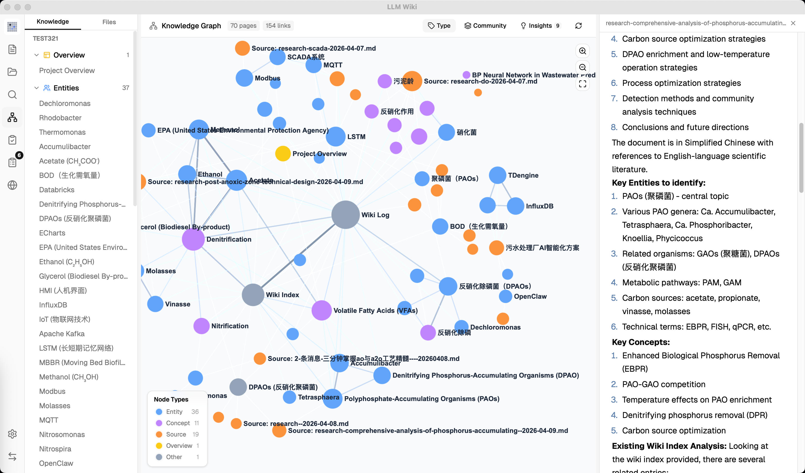
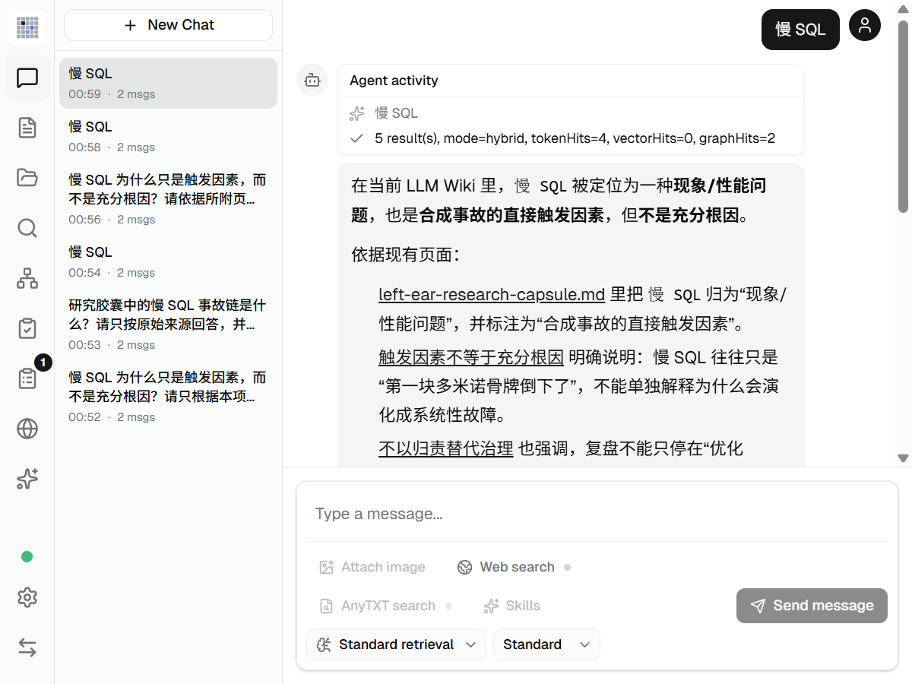
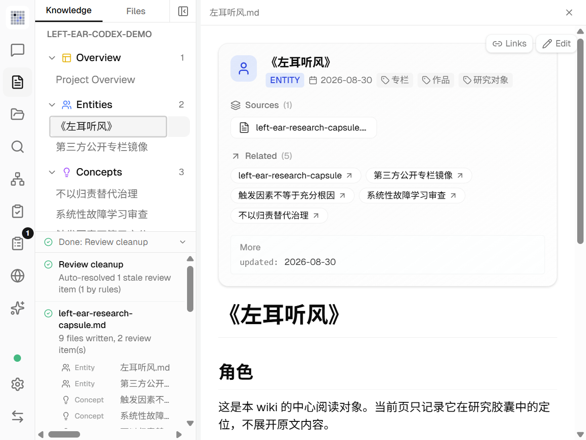
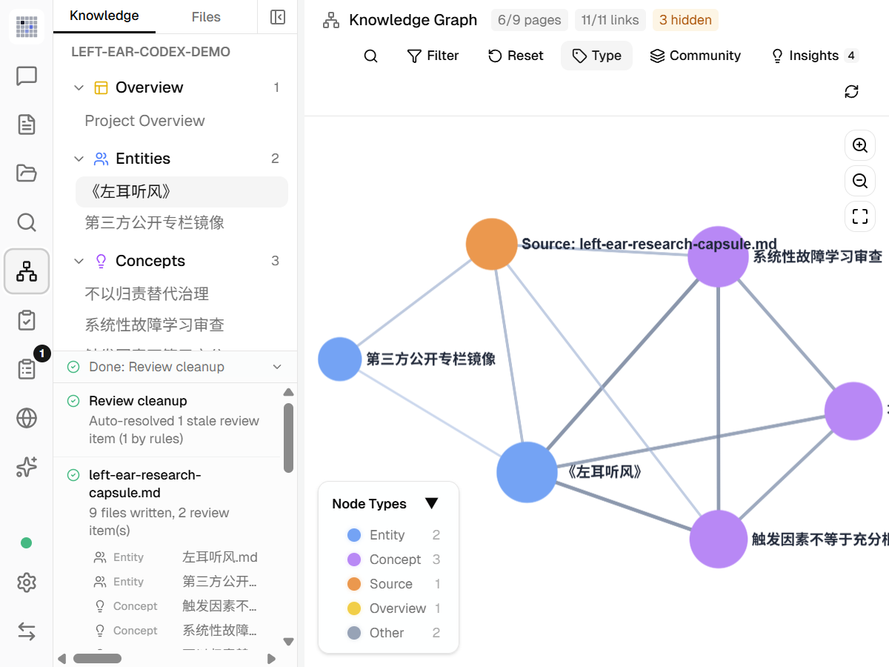
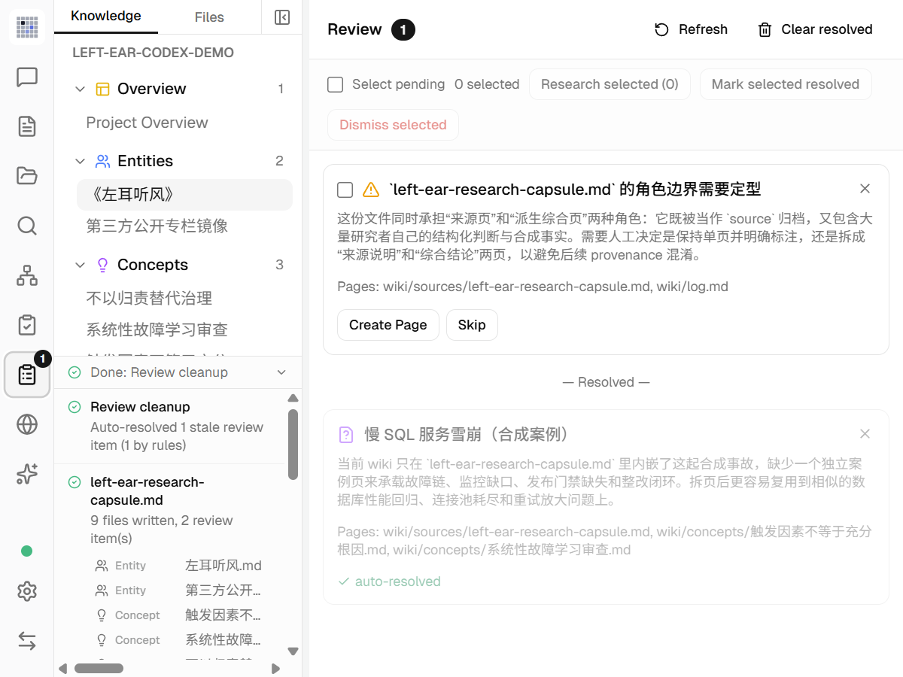
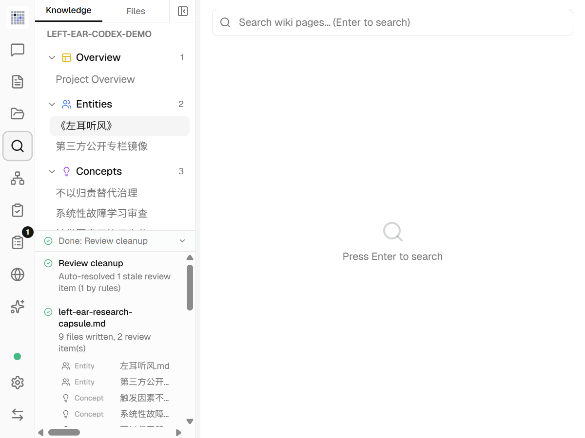
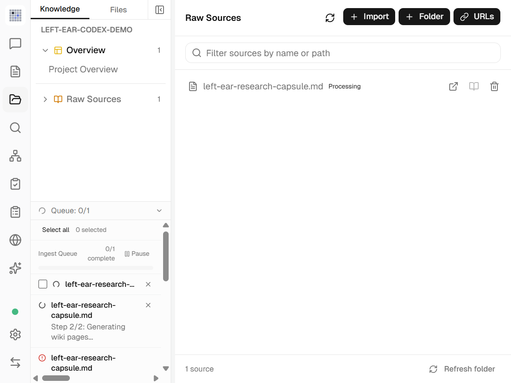

TRADITIONAL RAG
问题 → 找片段 → 临时回答 下一次问题重新发现关系；主要产物留在聊天里。SOURCE-LED CAPABILITY AUDIT
把散落资料，
编译成一座
持续生长的 Wiki。
LLM Wiki 的核心不是“上传文件后聊天”，而是在资料进入时就抽取实体、概念、矛盾和关系，写成可编辑、可追溯、可被 Agent 调用的持久知识层。
看《左耳听风》样例
14 / 14 源码检查通过
KNOWLEDGE COMPILER
PINNED v0.6.11
01 / RAW
原始资料
PDF · Office · Web · Media
02 / ANALYZE
实体 · 概念 · 冲突
两阶段 LLM 摄取
PERSISTENT WIKI
Markdown + sources[] + [[links]]
03 / RETRIEVE
关键词 × 向量 × 图谱
RRF + graph expansion
04 / ACT
Agent · MCP · Research
查询、生成、继续研究
v0.6.11固定上游版本
390TS / TSX / Rust 文件
142测试文件
9MCP 工具
证据等级 12 组能力由源码确认；《左耳听风》安全胶囊已由 Codex 真实摄取，检索、桌面壳与全量质量仍分开标注。
CORE DIFFERENCE / 核心差异
RAG 每次回答。
Wiki 持续积累。
普通 RAG 在提问时检索原文片段，再临时拼接答案。LLM Wiki 把摄取成本前置：先把资料编译成稳定页面、关系和来源记录，查询时再联合 Wiki、原始资料、向量与图谱。
LLM WIKI
资料 → 编译 Wiki → 持续查询 知识页面、来源、链接和人工修正可以长期存在。INGEST → QUERY / 工作流
一次资料进入，
经过五个明确阶段。
这条链路说明它为什么更像“知识编译器”，也标出后续研究最值得验证的位置。
-
01
解析来源保存原始资料，提取正文、结构和图片。
raw/sources/ -
02
结构分析识别实体、概念、论证、矛盾与页面建议。
analysis -
03
生成与合并创建来源摘要和主题页，添加 sources[] 与双链。
wiki/**/*.md -
04
建立检索层关键词评分、可选向量、图谱关系与聚类。
LanceDB + Graph -
05
查询、审核、研究引用回答、Lint、Review、Deep Research 与 Agent 输出。
Chat / API / MCP
UPSTREAM PRODUCT UI / 原库界面
有专门界面。
它本身就是
桌面知识工作台。
我们现在看到的是研究网页；原库则是基于 Tauri 的桌面应用。下面使用固定版本随仓库提供的官方截图，直接展示用户能看到和操作的产品表面。
UPSTREAM UI · DESKTOP WORKSPACE

界面资料暂时没有载入。
项目、Sources、Wiki、搜索、编辑、Review、Lint 与图谱的统一操作入口。
Chat、Deep Research 与图谱洞察消费同一份持久知识层。
Chrome Clipper 把网页送进项目；多格式摄取负责后续解析和编译。
本地 API 与 MCP 面向脚本和 Agent；它们是自动化入口，不必拥有独立页面。
LOCAL NATIVE RUN / 原生客户端实测
不是界面推测。
《左耳听风》已经在
原生端跑通。
我们从固定源码构建并启动 Windows Tauri 客户端，在原库自己的界面中创建隔离项目、导入安全研究胶囊，再查看生成 Wiki、Review、知识图谱与带引用问答。下列画面均来自这次本机运行。
ACTUAL WINDOW · v0.6.11
这组是本机原生应用实拍，不是官方宣传图，也不是研究网页仿制。输入只有研究者自写结构与合成慢 SQL 事故，不含 119 篇第三方专栏正文；上游业务代码没有为演示而修改。
机器可读运行结果 ↓
SOURCE BUILD PASS
Windows · Tauri desktop client
- 上游
- v0.6.11
- 生成器
- Codex CLI 0.150.1
- 模型
- gpt-5.4-mini
- 隔离
- 本地 CLI / 只读
安全研究胶囊
2 个 Review
11 条连接
Codex 回答
07 / HYBRID RETRIEVAL → CODEX

03 / PERSISTENT WIKI

05 / KNOWLEDGE GRAPH

06 / REVIEW QUEUE

04 / SEARCH

负责把资料变成可维护知识
管理原文、生成 Wiki、保留来源、建立双链、暴露 Review，并为搜索和 Agent 提供同一知识资产。
负责在提问时选证据
本次命中 4 个关键词结果与 2 个图谱结果；它是产品内部的一段查询链路，不等于整个产品。
负责理解、组织与表达
Codex 参与摄取时的知识编译，也在问答末端依据已检索页面生成回答；它本身不替代持久知识层。
PERSONAL KNOWLEDGE COMPOUNDING / 个人知识复利
沉淀的不只是一批资料，
沉淀的不只是一批资料，
还有你解决问题的方法。
它把“我知道什么”和“我通常怎样做”分别保存在知识资产与 Skill 中。模型可以更换，Markdown、来源、关系和方法仍然留下。
- 01 / COLLECT来源
原始文件、网页和媒体保留在
raw/sources，知道证据从哪里来。 - 02 / COMPILE知识
模型提取实体、概念、案例和方法，写成可读、可改的 Markdown Wiki。
- 03 / CONNECT关系
双链、共同来源和页面类型形成图谱，暴露社群、桥接点与知识缺口。
- 04 / RETRIEVE使用
RAG 与 Agent 查询 Wiki、原始来源和图谱，把相关证据交给当前模型。
- 05 / CORRECT修订
人通过编辑器、Review 或 Obsidian 修正内容；Agent 只能在授权范围内回写。
- 06 / REUSE能力
把成熟的检查表、判断边界和工作步骤写成 Skill，下一批资料继续复用。
我知道什么，证据在哪里
原始来源、Wiki 页面、sources[]、双链、图谱、索引与 Review。
我通常如何分析和行动
可复用 Skill、审查清单、输出模板、工具选择规则和需要人工确认的边界。
真实失败与恢复也被保留 展开查看边界

第一次 Codex 摄取返回空 agent_message，自动第二次尝试才写出 9 个文件。Chat 还需要在原库设置中禁用 33 个与本项目无关的自动发现 Skills，并把 Retrieval / Agent 都设为 Standard，才能走本地 Wiki 检索后备链路。这说明能力真实存在，但当前 Codex CLI 的开箱配置仍有整合摩擦。
CONTROLLED SAMPLE / 受控样例
还是那份《左耳听风》，
三种方式会留下什么？
我们复用此前 119 篇专栏代理语料的研究结果，用同一个慢 SQL 故障问题，演示直接模型、普通 RAG 和 LLM Wiki 的处理差异。
03 / KNOWLEDGE COMPILER
读取样例数据…
LLM Wiki
正在载入同题处理路径。
—
留下的产物
适用判断
—
ILLUSTRATIVE WIKI MAP
回答之前，知识已经有了位置。
示例映射，不是真实摄取产物。
样例数据读取失败。
REAL CODEX INGEST / 真实摄取
这次不是示意。
Codex 真的把资料编译成了 Wiki。
我们把研究者自写的来源边界、合成慢 SQL 事故和故障学习方法交给固定上游的 autoIngest。Codex 负责理解，上游代码负责 FILE / REVIEW 解析、路径约束、写盘、索引、日志与缓存。
SAFE INPUT
输入不是 119 篇第三方专栏正文。本次只使用 1 份、1,655 字符的研究者自写/合成胶囊；未启用云 Embedding、Web 搜索、MCP 或本地 API。
打开机器可读结果 ↗
RUN / LEFT-EAR-CODEX-AUTO-INGEST-V1
读取真实运行证据…
Codex CLI → autoIngest
- 总耗时
- —
- Codex 调用
- —
- Wiki 页面
- —
- 主题页面
- —
- Wikilink
- —
- Review
- —
MODEL CALLS / 模型阶段
摄取成本发生在查询之前。
GENERATED WIKI / 真实产物
选择一个页面，检查它留下的内容与关系。
—
—
正在读取生成页面…
—
- 来源
- —
- 链接到
- —
- 内容哈希
—
QUALITY READOUT / 质量读数
真实运行也暴露了必须人工接手的位置。
真实运行证据读取失败。
CAPABILITY & MEANING / 能力与意义
它真正提供的，
是人与 Agent 共用的知识层。
原始文档本来就能被机器读取；LLM Wiki 的新增价值，是把其中的案例、概念、方法、边界和来源编译成人能审阅修改、机器能检索关联、Agent 能持续复用的半结构化知识。
不只切块，而是形成来源页、主题页、关系和待确认问题。
结果保留为 Markdown、sources 与 wikilink，可以继续编辑和重建索引。
人阅读页面和图谱，程序通过搜索、API 与 MCP 使用同一知识层。
Lint 处理结构问题，Review 暴露证据缺口、矛盾和需要人工判断的过度推断。
WHEN TO USE / 使用场景
资料需要长期生长时，它才真正划算。
适合
- 论文、技术专栏、源码说明与研究日志的长期专题研究
- 故障案例、SOP、设计决策与经验方法的组织记忆
- 同一知识需要被人、Codex、Claude Code 或其他 Agent 反复使用
- 要求 Markdown 可迁移、来源可追溯、模型理解可人工修订
不宜直接使用
- 只问一次、没有长期沉淀价值的问题
- 要求毫秒级实时回答，却不能接受前置摄取成本
- 要求零误差的事实数据库，但没有人工审核和原文核验
- 敏感资料必须完全离线，而模型或 Embedding 仍配置为云服务
- 需要成熟的企业权限、多人协作和超大规模吞吐，却没有二次开发
CAPABILITY MATRIX / 能力矩阵
选择一项能力，
查看机制与源码证据。
源码确认
运行待验证
当前筛选没有匹配的能力条目。
能力数据加载失败。
请通过本地 HTTP 服务打开页面，并确认 assets/capabilities.json 存在。
RESEARCH BOUNDARY / 研究边界
能力很完整，
可信度仍要分层。
源码与本机实测回答了“有没有、能不能跑”；长期质量和规模仍需在真正采用时重新验证。
它是 LLM 编译出的派生视图。关键结论仍应回到原始资料，最好进一步做到 claim 级引用。
若配置云模型、Embedding 或搜索服务，内容仍会发送到对应提供商；敏感资料需单独设计 Local-only 路径。
当前适合个人与小规模研究；并行摄取、权限、协作、审计和超大语料仍是扩展方向。
PINNED EVIDENCE / 固定证据
研究对象不会悄悄变化。
- 版本
- v0.6.11
- 提交
e8082119649e- 许可证
- GPL-3.0